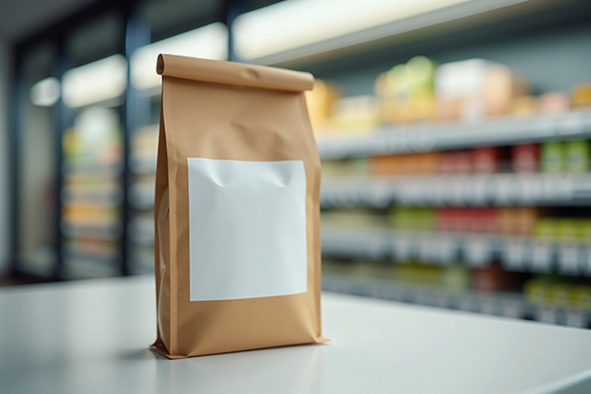
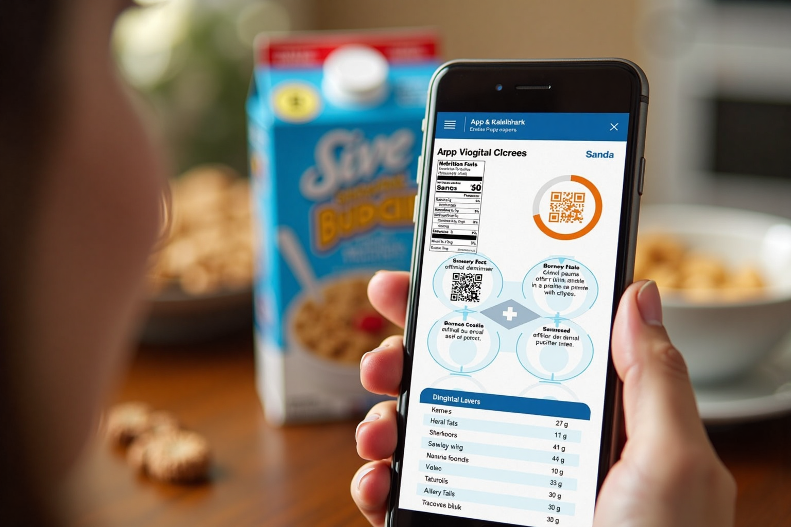
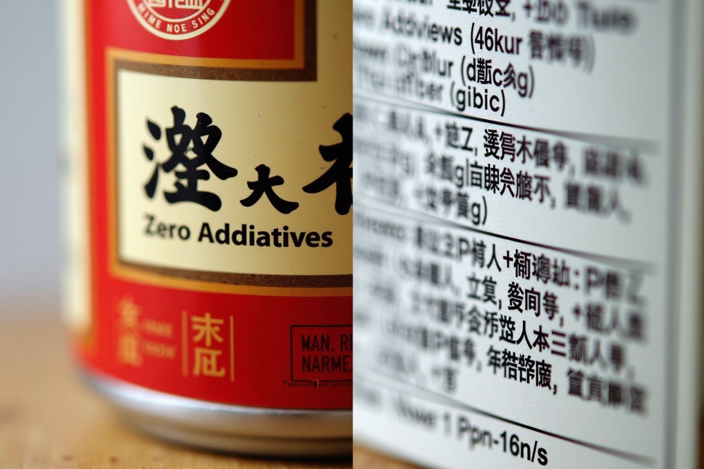
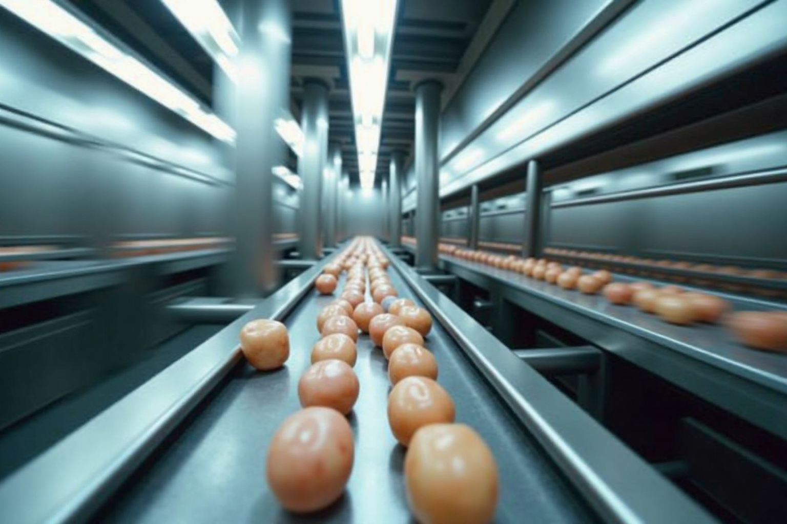
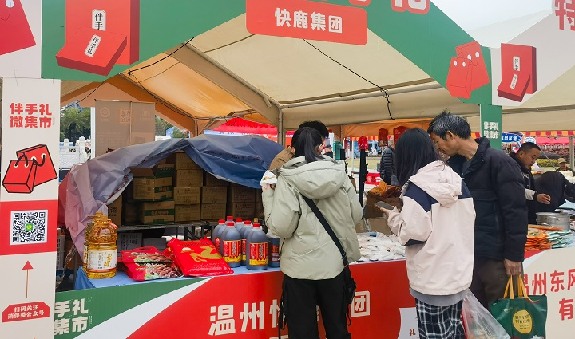

民以食为天，食以安为先。中国已构建起一个庞大的食品安全国家标准体系，截至目前，累计发布的标准数量已达 1660项，包含超过 20,000项 指标，广泛覆盖了 所有340余种 食品类别。这套体系，是守护国民"舌尖上的安全"的坚实屏障。

当食品包装上曾经醒目的"零添加"字样面临规则的重新界定，当可能引发身体不适的过敏原被要求清晰"亮牌"，当营养成分表以更精细的"1+6"面貌呈现——一场关乎中国食品行业未来走向和亿万消费者日常选择的深刻变革，正随着国家最新发布的一系列食品安全标准悄然展开。
2025年3月27日，国家卫生健康委员会与国家市场监督管理总局联合发布的 59项 新的及修订的食品安全国家标准，犹如为高速运行的食品产业设定了新的导航坐标。
这不仅是中国食品安全监管体系的一次意义深远的升级，更清晰传递出强化全链条风险管理、提升消费者知情权与健康权益的决心。
新标的核心要义何在？它们将如何搅动庞大的产业格局，又将怎样触动包括温州在内的广阔市场？本篇报道将依据现有公开信息和研究报告，为您层层解析。
时代的呼唤：为何需要这场『舌尖』变革？
中国食品安全标准体系概览
截至目前，我国已建立起覆盖广泛的食品安全标准体系。
累计标准总数
1660项
包含指标数
>20,000项
覆盖食品类别
>340种
然而，时代在发展，消费在升级，新的需求与挑战也应运而生。市场上部分食品标签的宣传语模糊不清，甚至可能误导消费者；对特定人群，如食物过敏者的保护措施亟待加强；公众对营养健康的关注日益高涨，需要更透明、更科学的食品信息作为指引。
正是在这样的时代背景下，国家卫健委与市场监管总局在深入的风险评估、产业调研和社会关切分析基础上，于2025年3月27日正式推出了此次涉及 59个项目（包括 50项新制定标准 和 9项标准修改单）的重大更新。
进一步提升食品安全保障水平，维护公众健康，促进食品产业高质量发展。
国家卫健委与市场监管总局官方公告 (2025.3.27)
官方公告明确指出，此举旨在"进一步提升食品安全保障水平，维护公众健康，促进食品产业高质量发展"。本次更新内容广泛，触及食品标签、特殊膳食食品（如婴幼儿配方食品）、乳制品、肉制品、食品添加剂、生产经营规范乃至检验方法等多个关键环节，充分展现了监管机构以动态、科学的标准体系应对新形势、满足新期待的决心与行动力。
新发布标准构成 (共59项)
本次更新涵盖新制定与修订的标准。
新制定标准 (50项)
标准修改单 (9项)
告别模糊，亮明底牌：标签核心变革
在众多新标中，与消费者日常购物体验关联最直接、引发讨论最热烈的，莫过于对预包装食品标签提出的一系列革新性要求。其中四大焦点，尤为引人瞩目，它们共同勾勒出未来食品信息沟通的新图景：
1. 告别"零添加"模糊地带：规范宣传，回归本真
• 新规速览：《食品安全国家标准 预包装食品标签通则》（GB 7718-2025）明确亮剑，禁止使用"不添加"、"零添加"或类似字样，来刻意强调食品配料中未使用或未添加某些成分。与此同时，若食品名称提及了特定配料（如"燕窝月饼"），则需在标签中清晰标示其添加量或在成品中的含量。
• 背后逻辑与影响：长期以来，"零添加"概念被部分商家作为营销"捷径"，利用了消费者对"天然"、"无添加"的朴素追求，但这往往与产品的整体营养真相存在偏差。例如，报告中提及，标称"不添加蔗糖"的饮品可能含有其他添加糖类（如果葡糖浆等），易造成误解。
此举是规范行业乱象、引导消费者建立正确认知的关键一步。
钟凯, 科信食品与健康信息交流中心主任
可以预见，这将倒逼企业告别模糊营销，更加注重产品本身的品质与科学信息的准确传达，同时也将引导消费者跳出"零添加=绝对健康"的认知误区，学会更细致地审阅配料表与营养成分表。
2. 过敏原"强制可见"：为特殊人群筑起信息"防火墙"
• 新规速览：面对日益增多的食物过敏问题，新标准给出了强制性解决方案：必须在食品标签上清晰标示致敏物质信息。具体而言，当预包装食品使用了以下 八大类 食品及其制品作为配料时—— ①含麸质的谷物（如小麦、大麦）；②甲壳纲类（如虾、蟹）；③鱼类；④蛋类；⑤花生；⑥大豆；⑦乳；⑧坚果及其制品 ——必须在配料表中以醒目方式（如加粗、加下划线）标示，或在配料表邻近处使用明确的提示语。
强制标示的八大类过敏原
当食品使用以下类别及其制品作为配料时，必须醒目标示：
含麸质的谷物
甲壳纲类
鱼类
蛋类
花生
大豆
乳
坚果及其制品
• 意义与变革：这一强制性要求，极大地提升了对食物过敏消费者的保护力度。
"这将有助于保护食物过敏人群的健康，" 国家食品安全风险评估中心标准中心主任朱蕾强调。
朱蕾, 国家食品安全风险评估中心标准中心主任
此前，过敏原信息标示在我国并非全面强制，消费者识别风险存在困难。新规的实施，意味着过敏人群在购物时将拥有更可靠的"避雷针"，显著降低误食风险。这不仅与国际主流做法接轨，更体现了食品安全监管的人文关怀。对企业而言，则意味着从原料采购到生产加工的全链条，都需要建立更严格的控制体系，确保过敏原信息的准确无误。

精细画像，数字赋能：标签核心变革（下）
3. 营养成分"精细画像"："1+6"助力健康选择
• 新规速览：《预包装食品营养标签通则》（GB 28050-2025）对强制标示的营养成分进行了升级扩容，从过去的"1+4"格式（能量+蛋白质、脂肪、碳水化合物、钠）升级为 "1+6"格式，即强制要求额外标示 "糖" 和 "饱和脂肪（或饱和脂肪酸）" 的含量。标准同时细化了标示格式及营养素参考值（NRV%）的计算要求。
• 驱动力与效用："三减"（减盐、减油、减糖）已成健康共识。将糖和饱和脂肪这两项备受关注的成分纳入强制标示范围，旨在让食品的营养构成更加透明化。消费者，特别是关注心血管健康、体重管理的人群，将能更直观、便捷地比较不同产品的相关含量，从而做出更符合自身需求的健康选择。
这一变化预计将产生显著的"指挥棒"效应，引导食品企业在产品研发中更加注重营养均衡，积极探索降糖、降脂的技术路径，推出更多满足健康消费趋势的产品。
4. 标签进入"数字时代"：扫一扫，信息全掌握
• 新规速览：紧随数字化浪潮，新标准明确鼓励并规范食品数字标签的应用，例如，利用二维码技术，为消费者打开一个获取更全面食品信息的窗口。

数字标签：突破物理限制，提供海量食品信息。
• 创新与前景：小小的传统标签，常因版面有限而信息拥挤、字号偏小。数字标签则能突破物理空间的束缚，成为一个信息富矿。理论上，它可以包含从原料溯源、生产工艺、过敏原详细解释，到营养科普、食用建议视频、企业资质认证等海量信息。
更妙的是，借助智能手机，还能实现字体放大、语音播报等辅助功能，惠及老年人等不同群体。据报告一信息，目前已有 超过400款 预包装食品率先试水数字标签，新标准的出台无疑将为其规范化、规模化应用铺平道路。
数字标签的潜力
一个小小的二维码，可以解锁前所未有的信息维度：
海量信息
原料溯源、生产工艺、完整配料表、检测报告等
个性化服务
过敏原深度解读、营养计算器、食用建议视频
辅助功能
字体放大、语音播报，惠及老年人等群体
互动与追溯
消费者反馈、品牌故事、防伪查询
这不仅是信息透明化的重要一步，也为企业与消费者互动、传递品牌价值开辟了新渠道，当然，这也对企业的数字化建设提出了新要求。
点击下方的模拟按钮，体验数字标签可能包含的部分内容：

涟漪效应：新标如何重塑产业与餐桌？
新标准的实施，如同投入平静湖面的一颗石子，其产生的涟漪将广泛触及食品产业的各个角落，也必然对温州这座兼具发达食品制造业和庞大消费市场的城市产生影响。
产业层面：阵痛与升级并存
• 合规成本的现实考量：标签更新、包装换代、生产线调整、员工培训……这些都是企业必须面对的直接成本。特别是对于产品线丰富、更新速度快或规模较小的企业，短期内可能会感受到一定的经营压力。
• 产品策略的重新定位："零添加"等营销"光环"褪去，强制标示糖、饱和脂肪等信息，将促使企业更加聚焦产品本身的品质、配方和营养价值，推动产品向更健康、更科学的方向迭代。
• 管理体系的强化需求：过敏原的严格管控，要求企业在供应链管理、生产过程控制等方面投入更多精力，确保信息的精准无误。拥抱数字标签，则需要相应的技术和信息管理能力支撑。

温州食品产业门类齐全，将直接受新规影响。
温州视角：挑战亦是契机
温州食品产业门类齐全，从海产加工到乳肉制品，从烘焙糕点到休闲零食，都将是新规的直接作用对象。本地海产企业需严谨对待鱼类、甲壳纲类过敏原标示；传统名点、特色小吃则可能需要审视其糖、钠、饱和脂肪含量，探索更健康的改良方案。短期内，本地企业尤其是中小企业需要积极学习新规，投入资源进行调整。但长远看，统一、升级的标准有助于净化市场环境，提升"温州制造"食品的整体形象和信誉度，为那些真正注重品质和合规的企业带来更公平的竞争平台和发展机遇。
消费者层面：赋权与教育同行
新标的核心受益者是广大消费者。更透明的信息意味着更强的选择能力和安全保障。过敏人群的风险降低，关注健康的消费者有了更清晰的指引。数字标签则提供了前所未有的信息深度。当然，消费者也需要一个学习和适应的过程，学会看懂新标签，理解新信息。
市场层面：优胜劣汰加速
新规的实施将推动市场竞争格局的演变。那些能够快速响应、严格执行标准、并能提供高品质、高透明度产品的企业，有望赢得消费者青睐，扩大市场份额。反之，跟不上步伐或试图规避的企业则可能面临淘汰。
监管层面：责任与服务并重
新标准的生命力在于执行。监管部门需要制定配套的实施细则，加强市场监督检查，确保标准不打折扣地落地。同时，也需要做好对企业和公众的宣传、培训和指导工作。温州等地方监管部门在此过程中，将扮演关键的指导者和监督者角色。
前路展望：挑战、机遇与落地时间表
尽管距离新标正式实施尚有过渡期，但其发布已引发各界广泛关注与讨论：
多方声音：期待、关切与初步反响
• 专家解读：多位专家对新标给予积极评价。如科信食品与健康信息交流中心主任钟凯认为，禁止"零添加"等用语是规范市场、引导理性消费的重要举措。国家食品安全风险评估中心标准中心主任朱蕾则高度肯定了强制标示过敏原对保护特定人群健康的价值。
• 行业动态：部分大型企业已公开表态将积极跟进。例如，光明乳业表示将严格执行新规，调整产品包装。这预示着行业头部力量已开始行动。同时，业界也普遍关注合规成本、技术细节及过渡期的具体安排。
• 社会观点：普遍认为，新标的回应性强，抓住了当前食品安全和消费领域的一些痛点，对生产经营者提出了更高要求，最终将惠及消费者，有助于实现"吃得明白、吃得安全、吃得放心"。
落地时间表与前瞻
• 关键节点：本次发布的核心标签标准——《食品安全国家标准 预包装食品标签通则》（GB 7718-2025）和《预包装食品营养标签通则》（GB 28050-2025），均设置了 两年 的过渡期，将于 2027年3月16日 正式生效。这为企业调整生产、消化库存、更新包装提供了宝贵的时间窗口。其他标准的实施日期需依据具体标准文本确定。
核心标签标准实施关键节点
GB 7718 & GB 28050
2025-03-27
新标准发布
国家卫健委与市场监管总局联合公告
2025-03-27 至 2027-03-15
过渡期 (2年)
企业调整生产、消化库存、更新包装的时间窗口
2027-03-16
正式生效
此日期后生产的食品必须符合新标签标准要求
• 未来图景：此次大规模的标准更新，清晰地描绘了中国食品安全监管的发展方向：更加科学化、精细化，更加注重营养健康引导，更加积极地与国际标准对接。可以预见，未来：
- 食品标签将告别模糊，走向精准和易读。
- 数字化工具将在食品信息追溯与传递中扮演越来越重要的角色。
- "健康"将不再只是宣传口号，而是融入产品研发与市场竞争的核心要素。
- 基于风险预防的监管理念将得到进一步强化。
59项食品安全新标准的发布，是中国食品安全治理现代化征程上的又一个坚实足迹。它不仅是对法规文本的修订，更是对食品生产、流通、消费全链条的一次深度重塑。"零添加"的规范、"过敏原"的明示、"营养表"的精进、"二维码"的链接，共同指向一个更诚实、更透明、更负责任的食品市场未来，其最终目标是护航公众的健康与安全。
对食品行业而言，这既是必须迎接的挑战，也是实现高质量发展的契机。对于温州这样的食品产业重镇，积极拥抱变化，化压力为动力，不仅关乎企业的生存发展，也关乎城市食品安全的整体声誉。
虽然变革的阵痛在所难免，但一个信息更对称、选择更智慧、消费更安心的食品新时代正迎面走来。未来两年过渡期将是关键的适应阶段，而确保新标的最终有效实施，让其红利真正惠及每一位国民，将是全社会共同的期待与责任。